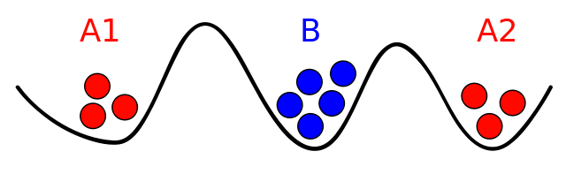
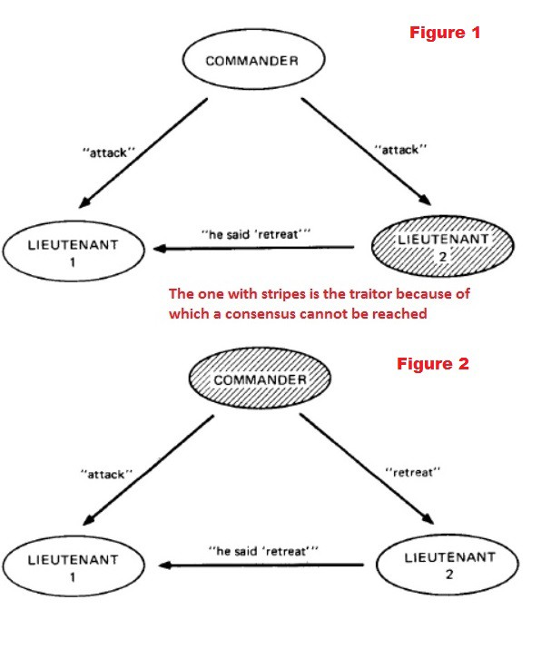
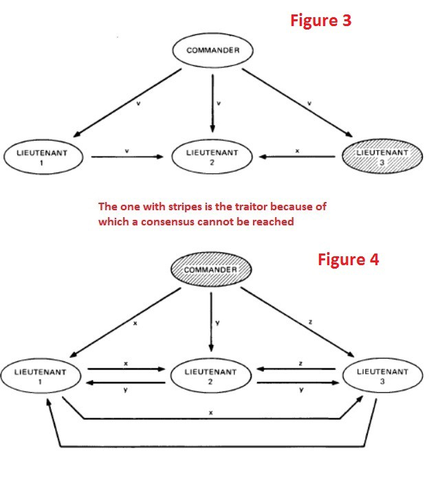
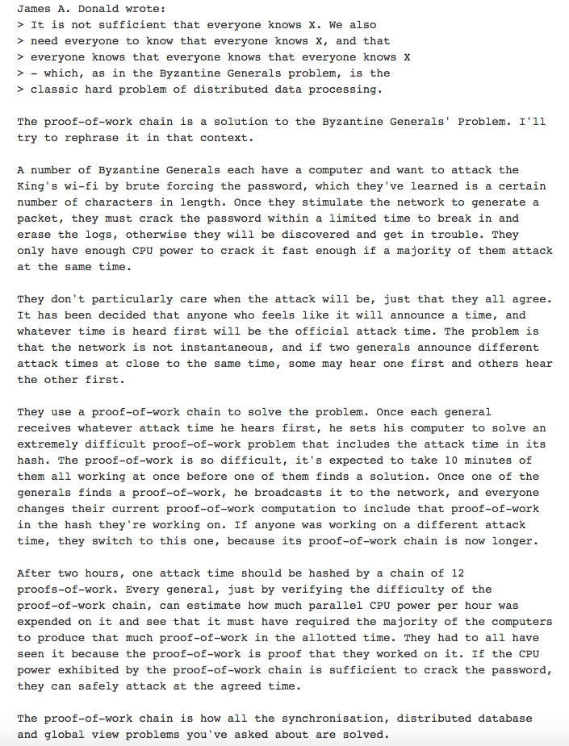

Bài toán 2 vị tướng quân (Two generals problem)
Trong ngành khoa học máy tính, bài toán Hai vị tướng là một vấn đề được đưa ra nhằm đạt được thỏa thuận thông qua việc trao đổi thông tin trong một môi trường không đáng tin cậy. Nội dung bài toán được mô tả như sau:
Ngày xửa ngày xưa, thời binh đao loạn lạc, các quốc gia trên thế giới liên tục gây chiến với nhau nhằm tranh giành lãnh thổ. Ở một trận chiến nọ, có 2 vị tướng, mỗi người lãnh đạo 1 đạo quân, mỗi đạo quân bao vây quân địch ở 2 hướng, nhưng họ bị ngăn cách với quân địch bởi 2 ngọn núi.  Quân địch đông và nguy hiểm, 2 vị tướng nhận thấy họ chỉ giành chiến thắng khi hợp lực tấn công cùng lúc, ngược lại sẽ chuốc lấy thất bại. Do đó, họ cần thống nhất với nhau về thời gian tấn công, nhưng họ trao đổi thông tin với nhau như thế nào? Ở thời đại khoa học kĩ thuật chưa phát triển đó, lựa chọn duy nhất của 2 vị tướng là viết thư, rồi cử sứ giả chuyển bức thư đó.
Giải pháp này tồn tại các rủi ro:
- Con đường duy nhất để đưa thư là đi xuyên qua quân địch (đi vòng qua 2 ngọn đồi sẽ mất rất nhiều thời gian), do đó, sứ giả có thể bị bắt, thư không được gửi tới đích.
- Thư được gửi thành công, nhưng nội dung thư có thể bị sửa đổi (do quân địch mua chuộc, hay do sứ giả phản bội, v.v…)
Một bé gái nào đó đã đưa ra giải pháp cho vấn đề này: đào 1 đường hầm xuyên qua thung lũng. Đùa thôi, bỏ thời gian và công sức để đào hầm thì đi vòng qua núi sẽ nhanh hơn.
Quay lại phương pháp đưa thư, 1 trong 2 vị tướng sẽ đưa ra ngày giờ tấn công, sau đó gửi thông điệp cho người kia. Nhưng làm thế nào cả 2 biết rằng thông điệp đã được gửi an toàn và được đồng thuận?
Chúng ta cùng xem xét quá trình này:
- Vị tướng A1 gửi đi 1 thông điệp: “Hãy tấn công vào 12:00 ngày 28/04”. Tuy nhiên, sau khi gửi đi, ông hoàn toàn không biết được thông điệp có được gửi đến người kia một cách an toàn hay không.
- Để xác nhận điều đó, sau khi nhận được thông điệp, vị tướng A2 sẽ viết một thông điệp xác nhận: “Tôi đã nhận được thông điệp, hãy cùng tấn công vào lúc 12:00 ngày 28/04”, và gửi lại cho A1. Nhưng một lần nữa, A2 vẫn không biết chắc rằng thông điệp có được gửi cho A1 hay không.
- Để chắc chắn hơn, khi vị tướng A1 nhận được thông điệp xác nhận, ông lại gửi tiếp 1 thông điệp với nội dung: “Tôi đã nhận được xác nhận của anh về cuộc tấn công lúc 12:00 ngày 28/04 rồi”. Tuy nhiên, vẫn có những rủi ro cho người đưa thư như đã đề cập ở trên.
Cứ như vậy, cả 2 vị tướng đều bị đặt trong trạng thái băn khoăn, không ai có thể biết được thông điệp của mình có được gửi đến đích hay không, và người kia có đồng ý với kế hoạch tấn công hay không.
Bài toán các vị tướng Byzantine (The Byzantine generals problem)
Bài toàn các vị tướng Byzantine là phiên bản tổng quát của bài toán Hai vị tướng, miêu tả quân đội Byzantine hùng mạnh, tiến hành vây hãm 1 thành phố. Quân Byznatine chia thành nhiều đạo quân nhỏ, mỗi đạo quân được chỉ huy bởi 1 vị tướng, dưới mỗi vị tướng lại có các chỉ huy. Họ đều liên lạc với nhau bằng cách gửi thư. Các cánh quân phải đồng thuận về việc tất cả cùng tấn công, hoặc cùng rút lui tại cùng một thời điểm xác định. Ngược lại, họ sẽ bị đánh bại.
 Nếu tất cả các vị tướng/ chỉ huy đều trung thành, mọi chuyện sẽ thật dễ dàng. Nhưng trong hàng ngũ Byzantine tồn tại những kẻ phản bội.
Nếu tất cả các vị tướng/ chỉ huy đều trung thành, mọi chuyện sẽ thật dễ dàng. Nhưng trong hàng ngũ Byzantine tồn tại những kẻ phản bội.
Giả sử một vị tướng gửi thông điệp “Tấn công” cho 2 chỉ huy dưới quyền, nhưng chỉ huy 2 là kẻ phản bội, hắn sẽ sửa đổi nội dung thông điệp (“Rút lui”) và gửi lại cho chỉ huy 1. Chỉ huy 1 nhận được 2 thông điệp khác nhau và bối rối không biết ai là kẻ phản bội. Nếu chỉ huy 1 tuân theo vị tướng, quân lực sẽ bị giảm đi (do chỉ huy 2 không tấn công), họ sẽ thất bại.  Ngược lại, nếu chỉ huy là kẻ phản bội, đội quân cũng sẽ thua trận.
Nếu có thêm 1 chỉ huy, hoặc có thêm ý kiến khác trong việc điều quân (ví dụ: “Đang cân nhắc”) sự phức tạp trong việc đồng thuận giữa tướng quân và các chỉ huy sẽ tăng lên nhiều lần. Với đội quân gồm hàng chục vị tướng và hàng trăm chỉ huy, độ phức tạp sẽ tăng theo cấp lũy thừa. 
Đây chính là vấn đề đặt ra cho một hệ thống phân tán, điển hình là Blockchain. Tại đó, các nút hoạt động ngang hàng, không hề tồn tại “vị tướng” (server) mà chỉ có các “chỉ huy” với quyền hạn bằng nhau, tương tác với nhau nhằm tìm sự đồng thuận.
Hệ thống chịu lỗi Byzantine (Byzantine Fault Tolerance)
Hệ thống chịu lỗi Byzantine là hệ thống có thể giải quyết vấn đề của bài toán các vị tướng Byzantine. Vào năm 2008, cha đẻ của Bitcoin, Satoshi Nakamoto đã giới thiệu một phương pháp nhằm giải quyết bài toán các vị tướng Byzantine, ông gọi phương pháp này là Proof-of-Work (PoW), hay “Bằng chứng công việc”. Satoshi đã trực tiếp giải thích về cách Bitcoin dùng PoW để giải quyết bài toán các vị tướng Byzantine trong một email gửi đi ngày 14/11/2008, bạn có thể xem qua tại đây: 